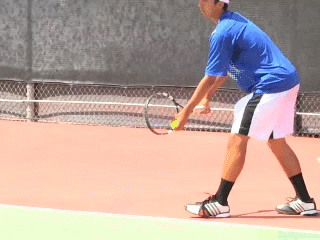
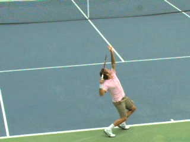
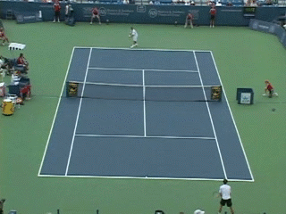
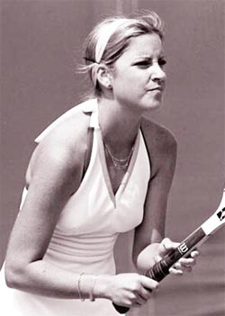
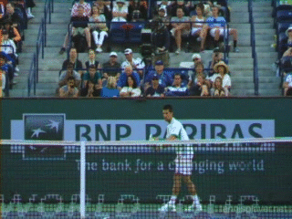
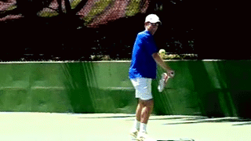
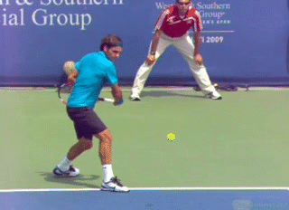

Understanding Mental Imagery:¶
Part 2
Archie Dan Smith, MD
How valuable can mental imagery be in your development and competitive results? Extremely. But this is something that is rarely understood, discussed, or utilized.
In my book, I detail the results of multiple research studies that show conclusively how effective the use of imagery can be, even if that research is not commonly known or put into practice by most players and pros. The use of mental imagery can result in:
Reduction in warm up time
Improved focus
Improved decision making
Reduced anxiety and increased confidence
Greater mental preparation and readiness
Improved technical learning
Improved serving speed, consistency, and accuracy
Improved service return accuracy and consistency
Increased percentage of points won at net
Improved strategy and increased overall points won
Although there is more detail in the book, here is a summary of one study demonstrating the power of imagery in improving serving speed for junior players.

Studies demonstrate that visualization can significantly increase serve speed.
The subjects were 48 players, ages 8-12. All had 2 to 4 years of tennis experience. The players were randomly divided into groups. All groups practiced with a certified coach 3 times a week for 90 minutes for 8 consecutive weeks.
The first group combined mental training and physical serve practice. The mental training consisted of watching an elite 14 year old player whose technique was highly rated by the coaches. The subjects watched this serve at normal speed, at half speed, and then frame by frame with the coaches pointing out key technical elements.
Next the participants closed their eyes, focused on their breathing for 30 seconds, and then visualized themselves executing their own serve according to the model imagery for a period of two minutes. Over time this group increased average serve speed by 5 mph.
Another group followed the exact same protocol, but added a strength training session. This group also increased service speed, but by less, by 3 mph.
A third group didn’t engage in either mental imagery training or strength training but practiced serving with traditional coaching corrections. This group increase service speed by about 2.75 mph

Visualize your serve technique at normal speed, in slow motion, and frame by frame.
A control group participated in tennis practices without practicing their serve. The control group increased service speed by 1 mph.
So, interestingly, the group that did only visualization training increased their serve speed even more than the group that did both visualization and weight training. And the qualitatively opinion of the coaches was that, regardless of the speed increases, the participants in the mental imagery group improved their technique much more than the other groups.
Returns
Here is a summary of a second study that focused on the return. The participants had played tennis for more than 7 years and were competing at a regional or national level. The average age was 19 years old.
They received serves hit by 3 tennis pros, who served to the same area in the deuce service box. The incoming serve speeds ranged from about 80-105 miles per hour.

Visualization increased return consistency and accuracy.
The returners targeted a crosscourt return to the deuce court between the service line and the baseline. Before the experiment all returners took a test to assess their imagery abilities and divided into good imagers and poor imagers.
Participants were then asked to imagine 15 service returns focusing on the ball trajectory and target. This was followed by hitting 15 actual returns. There was a control group that hit the returns but without doing any mental rehearsal before the returns.
After 10 weeks, both groups--the good imagers and the poor imagers--were substantially more consistent and accurate. The poor imagers were 34% more accurate, and the good imagers were 44% more accurate. The control group had no significant improvement.
These studies are just two examples of many. And of the ways to integrate imagery training into practice, both off court and on.
When and How To Use Imagery
My opinion is that a combination of two types of imagery practice is probably optimal. The first is a longer version off the court, and the second a shorter version when playing points.

Chris Evert pre-visualized her matches.
The longer, more structured version would include longer sessions of several minutes 3 to 4 times per week. This is exactly how Chris Evert described her pre-match preparation:
"Before I play a match, I try to carefully rehearse in my mind what is likely to happen and how I will react in certain situations. I visualize myself playing typical points based on my opponent's style of play. I see myself hitting crisp, deep shots from the baseline and coming to the net if I get a weak return. This helps me mentally prepare for a match, and I feel like I've already played the match before I even walk on the court."
There are no hard and fast rules about when and how to do this type of off court mental rehearsal and players should determine the time and place depending on what feels right and comfortable.
It could be for 5 minutes before you go to bed. Or before you start practice. Or in the car driving to a match—just make sure you don’t close your eyes if you are driving. My suggestion is to do this longer form at least 4 times per week then for 3 weeks to see results. This is the period it takes for muscle memory changes to become effective as we saw in the first two articles. My guess is that it’s probably the same to see real results from the impact of mental imagery training.
As we saw in the first article, there are at least 3 ways to create images in your mind. (Click Here.)
The first is internal visualization. This is seeing the shots and patterns as if you were seeing them through your own eyes.
The second is external visualization. This is seeing yourself as if you are watching a movie of your own tennis.
The third is kinesthetic visualization. These means imagining the feeling in your own body of hitting strokes and shot combinations.
There is no right or wrong here. Experiment and find which perspective works for you. It may be a combination of imagery and feeling. It may change or vary over time. Follow your instincts. Let your mind and body find what works.

Visualize your serve placement, the return, and your next shot.
On the Court
The second, shorter way to use imagery on the court. An example of this shorter imagery version would be prior to the start of a point. For example as a server, visualize the placement of your serve.
Then imagine your second shot depending on the return. For example you serve wide serve in the ad box, the returner hits a crosscourt return, and then you hit an inside out forehand.
There are a limitless number of possible combinations depending on your serve placements in both boxes for both first and second serves, and the return tendencies of your opponent. You can do something similar for the returns as described in the second study above.
Video
The better you can sync up your imagery with actual tennis, the better your experience. A well visualized stroke is more vivid and translates to better tennis in real matches.
You can improve your imagery by videotaping yourself. There are articles on Tennisplayer about how to do this (Click Here) and how to compare your technique with high quality models drawn from footage of elite pro players. (Click Here.)


Use pro models to improve the correspondence between your strokes and superior technique.
You may be surprised how poorly your real life form stacks up against your imagined form when you see yourself on video for the first time. But the visual comparison in the most powerful way to make real technical improvement.
Despite all the hundreds of books and articles on tennis, and all the thousands of lessons that are taught on court every year, very little attention has been paid to the power of imagery.
Look again at the box at the start of the article outlining the ways visualization can improve almost every area of your game. Create your own scenarios with imagery of how you want to play and how you want to feel and incorporate those into your practice, off court imagery work, and match play. Make this process a core part of your approach to the game and take your tennis to a new level.
Archie Dan Smith, MD is a retired physician living in Austin, Texas. Here is how he describes his tennis journey, leading to the creation of his work on muscle memory:
"I played for 2 years at my small town high school. For the next 10 years I played a dozen times a year with friends. Then I did not play for decades. About 10 years ago I began to play again. I was a mid-level 3.5 player but I could tell over time my game was slipping.
During this period I came up with and started implementing my theories on muscle memory. I started getting better. Two years ago I won the 3.5 men’s singles division in the long running main City of Austin tournament. I beat a 26 year old in the finals. Now I am recruited by USTA teams that have won regionals, and I play #1 doubles for a team in the Austin Tennis League. I conclude that there may be something to my theory."